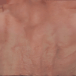
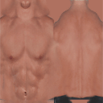
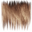
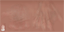
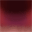
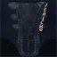
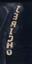
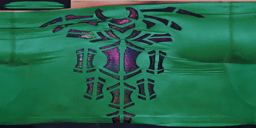
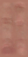

Actual PAC: 147456 / 148000 bytes. Current: 143360 bytes. Gameplay validation pending.
All candidate configurations, metrics, ceilings, allocation decisions and proofs
Detail coverage 2.6%; importance 1.575. Selected 32x16, 16 palette slots, 9 used colors, 528 encoded bytes.
Review: Retains less than one eighth of source pixels; inspect fine-detail legibility

Detail coverage 5.1%; importance 1.643. Selected 32x16, 16 palette slots, 10 used colors, 528 encoded bytes.
Review: Retains less than one eighth of source pixels; inspect fine-detail legibility
Review: Near-opaque alpha was resampled/quantized; measured alpha MAE 0.2500


Detail coverage 9.2%; importance 1.301. Selected 32x16, 16 palette slots, 5 used colors, 528 encoded bytes.
Review: Near-opaque alpha was resampled/quantized; measured alpha MAE 2.3516

Detail coverage 39.2%; importance 1.401. Selected 32x16, 16 palette slots, 15 used colors, 528 encoded bytes.

Detail coverage 21.8%; importance 1.628. Selected 64x64, 256 palette slots, 256 used colors, 5328 encoded bytes.
Texture donor: 128x64 → 64x64; 4096 padded pixel/CLUT bytes reclaimed; perceptual loss change 0.020066. Model data unchanged.
Review: Retains less than one eighth of source pixels; inspect fine-detail legibility
Review: Individual detail metric regresses despite aggregate allocation; human visual review required
Review: Unselected texture changed to fund selected fidelity; compare source/current/final images.
Detail coverage 75.2%; importance 2.456. Selected 32x8, 16 palette slots, 16 used colors, 400 encoded bytes.
Review: Near-opaque alpha was resampled/quantized; measured alpha MAE 2.9531

Detail coverage 75.2%; importance 2.389. Selected 64x64, 256 palette slots, 251 used colors, 5328 encoded bytes.



Detail coverage 4.6%; importance 1.131. Selected 32x8, 16 palette slots, 5 used colors, 400 encoded bytes.
Review: Near-opaque alpha was resampled/quantized; measured alpha MAE 1.4883


Detail coverage 52.0%; importance 1.910. Selected 32x16, 16 palette slots, 15 used colors, 528 encoded bytes.

Detail coverage 36.0%; importance 1.235. Selected 32x16, 16 palette slots, 14 used colors, 528 encoded bytes.
Review: Near-opaque alpha was resampled/quantized; measured alpha MAE 0.5000

Detail coverage 14.8%; importance 1.499. Selected 32x16, 16 palette slots, 7 used colors, 528 encoded bytes.
Review: Near-opaque alpha was resampled/quantized; measured alpha MAE 1.9766

Detail coverage 15.2%; importance 0.944. Selected 32x16, 16 palette slots, 15 used colors, 528 encoded bytes.
Review: Near-opaque alpha was resampled/quantized; measured alpha MAE 1.9805


Detail coverage 35.9%; importance 2.019. Selected 32x8, 16 palette slots, 8 used colors, 400 encoded bytes.

Detail coverage 25.1%; importance 2.217. Selected 32x16, 16 palette slots, 15 used colors, 528 encoded bytes.
Review: Near-opaque alpha was resampled/quantized; measured alpha MAE 0.9941


Detail coverage 39.1%; importance 2.465. Selected 32x16, 16 palette slots, 13 used colors, 528 encoded bytes.


Detail coverage 50.1%; importance 1.878. Selected 32x16, 16 palette slots, 14 used colors, 528 encoded bytes.

Detail coverage 0.0%; importance 0.770. Selected 32x8, 16 palette slots, 3 used colors, 400 encoded bytes.

Detail coverage 37.4%; importance 3.394. Selected 128x64, 16 palette slots, 16 used colors, 4368 encoded bytes.
Selected for fidelity priority. Priority is weighted 8x. Ordinary maps can fund improvements through reported texture-only exchanges; facial/cutout safeguards remain. Source ceilings, unchanged material depth, measured PAC size and existing pixel/CLUT envelope still apply. See rejected_upgrades for budget reasons.
Review: Selected texture remains reduced or palette-quantized; manual priority does not guarantee exact source fidelity. See priority_reduction_report.

Detail coverage 50.7%; importance 1.816. Selected 32x16, 16 palette slots, 13 used colors, 528 encoded bytes.

Detail coverage 3.8%; importance 1.028. Selected 32x16, 16 palette slots, 5 used colors, 528 encoded bytes.
